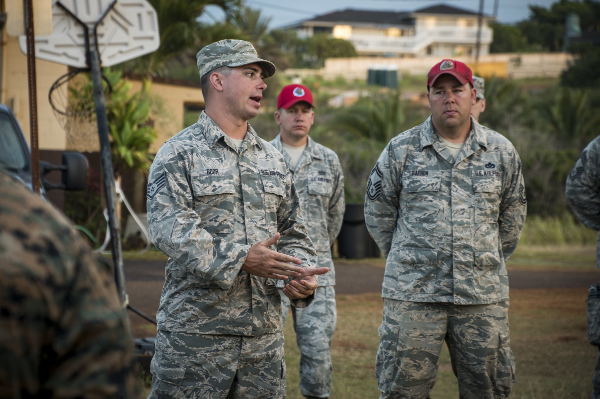
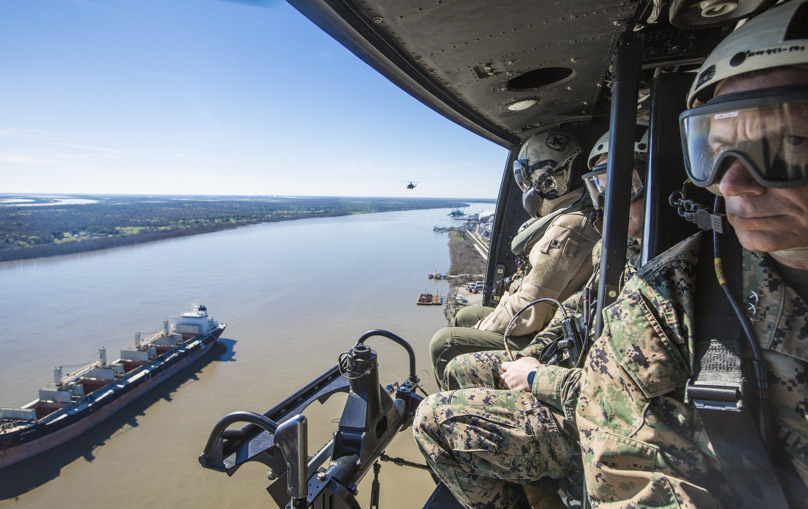

Persons in the Reserve or National Guard are not full-time active duty military personnel, although they can be deployed at any time should the need arise.
Reserve

"IRT Kapaa, Hawaii" by Nikon D750
Reserve soldiers are called to duty as needed, and can hold normal full-time civilian jobs. Army reserve soldiers attend training sessions near their home one weekend per month, and an annual field training.

"170216-M-EL431-0024" by Canon EOS 5D Mark lll
The purpose of the Reserve is to provide and maintain trained units and qualified persons to be available for active duty in the armed forces when needed. This may be in times of war, in a national emergency, or as the need occurs based on threats to national security. Their presence can be called upon to serve either stateside or overseas. The primary job of the Reserve is to fill the gaps in stateside service positions when the active duty forces ship overseas.
Go Back